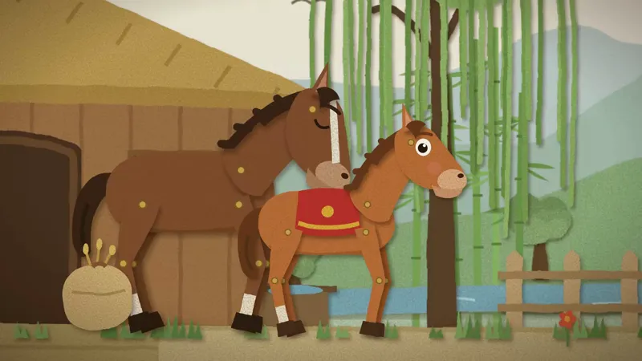
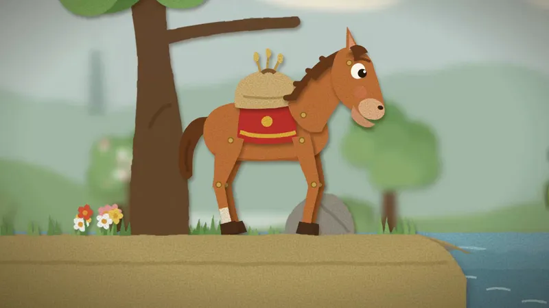
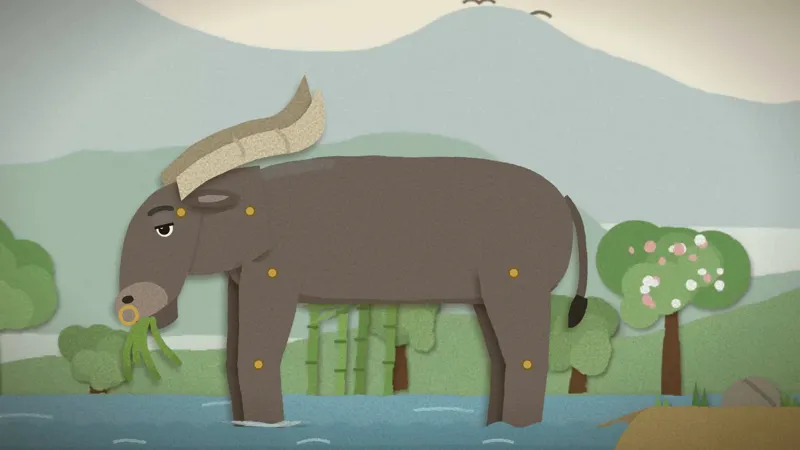
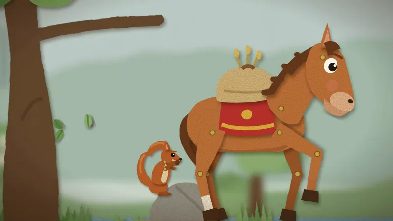
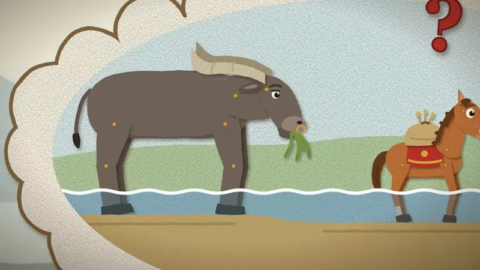
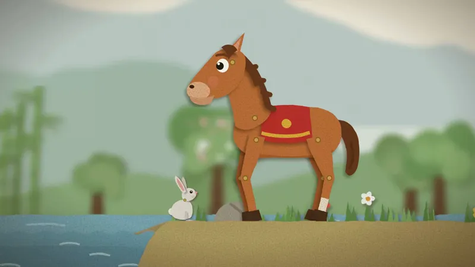
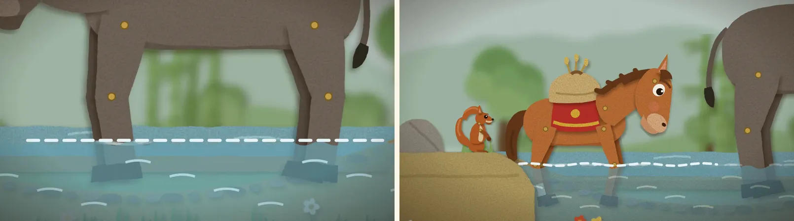

Uncle Ox says the river is shallow; Squirrel says it is deep. Little Horse has to find out for himself. Paper puppets in a layered spring valley, all drawn in code. Twice the film stops so a child can touch the picture and hear the words.






What we set out to do
The shelf had no Chinese story. 小马过河 is one almost every child in China knows: a foal is sent to the mill with half a sack of wheat, a river is in the way, an old ox says it is shallow and a squirrel says it is deep. We made it for young children learning English, with English voices, in the paper-puppet style of Little Red Riding Hood: no image model, everything drawn in code.
The whole story hangs on one picture: the same river is shallow for a big ox, deep for a small squirrel, and just up to the knees for Little Horse. So the film never only says how deep the water is. It shows it against legs, at the waterline, while the voice says it.
Showing the depth
The river is seen side-on, the way a paper theatre sees it, and the water stands in front of whoever wades in, so its depth reads against their legs. The puppets keep their sizes through the whole film and the riverbed is built on them: at the deepest point the water is on Uncle Ox's shins, at Little Horse's knees, and over Squirrel's head.

The film adds a few moments to the story, so a child can see why each of them was right:
- When we meet Uncle Ox he is already standing in the shallows, and Squirrel is tiny beside the river.
- When Mother asks "Did you think about what they said?", a thought bubble opens over Little Horse: the river cut side-on, the ox with the water at his shins, the squirrel under it, and Little Horse in between with a question mark.
- After the crossing, Uncle Ox says "Told you it was shallow", Squirrel says "Told you it was deep!", and they look at each other.
- On the way home a little rabbit wants to cross. Little Horse starts "The water only comes up to my—", looks at the rabbit's short legs, and says "For you, it might be deep. Hop on! Let's find out together."
Listen and find
Twice the film stops for a game. By the river, Little Horse needs someone to ask, and he asks the child to find things one at a time: a bird, a flower, a butterfly, and last Uncle Ox ("There's Uncle Ox! Let's ask him!"), which takes the story on. At the mill he asks for the wheel, the duck and the sack. He asks with his eyes on the child, and the picture keeps living while he waits: the ox chews, the wheel turns.
Nothing is ever called wrong. A tap on something else says that thing's name and asks again. After a second miss, the thing he wants wiggles; after a third, paper stars circle it; and if nobody finds it in twenty seconds, he says "Look! There it is!" Tap Little Horse himself and he says "That's me!" The game was new in this book, and Little Red Riding Hood's meadow stop was rebuilt the same way.
Puppets on four legs
Little Red Riding Hood's puppets stand on two legs. This story needed a foal, his mother, a water buffalo, a squirrel and a rabbit, so we built a rig for animals on four legs. Each leg is two paper pieces on pins, and the hoof is solved to land on a point, so a planted hoof stays exactly where it is while the body rides over it. Walking and trotting come from the distance covered, not from the clock, so the feet never slide. To turn round, a puppet squashes flat and comes out mirrored, like a paper cut-out turned over on the table.
Uncle Ox changed most along the way. After the first review he became a water buffalo: longer, thicker legs, two broad crescent horns, a broad muzzle and a nose ring.
A spring valley in layers
Four sets: the stable, the road, the river and the mill. Each is cut from layers of paper (misty mountains, willows, bamboo, peach blossom, a red paper sun), and as the camera moves the layers slide past each other at different speeds. Behind a close-up the set goes soft, and in the close-ups of the depth the water turns half see-through, so the legs show under it.
Voices, music and sound
Five ElevenLabs (v4) voices: George narrates, Jessica is Little Horse, Lily is Mother, Brian is Uncle Ox, slow and deep, and Laura is Squirrel, quick. Every word in every line is timed, and those times drive the mouths and the captions. The music is original, composed in code for this book: a synthesized guzheng and a soft dizi on a pentatonic scale, looping under the whole film and falling silent for the stare after the crossing. The river, the mill wheel, the hooves, the splashes and the rest of the sounds are synthesized in code too.
How it was made
One agent built everything the scenes share: the story and storyboard, the voices, the sets, the puppets and the helpers. Then nine scene agents, one per scene, each staged and checked its own scene: contact sheets of every shot, onion skins of the walks to see that hooves stay planted, frames at every cut. A director agent watched the exported film and wrote notes, and the scenes were reworked from them. There were four review rounds; in the last, the director also played both games.
The second round's notes put what the film is for in one line: a five-year-old must see the river shallow for Uncle Ox, deep for Squirrel and knee-deep for Little Horse, at the moments the voice says it. From then on, wherever depth is said, the film reuses its clearest pictures of it: the side-on slice in the thought bubble and a dashed waterline across the legs.